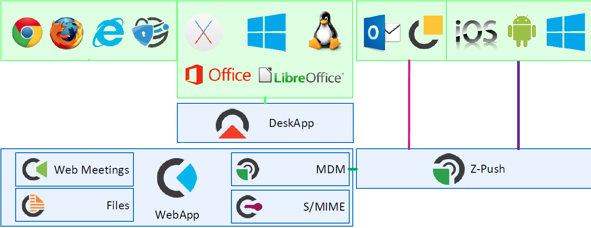
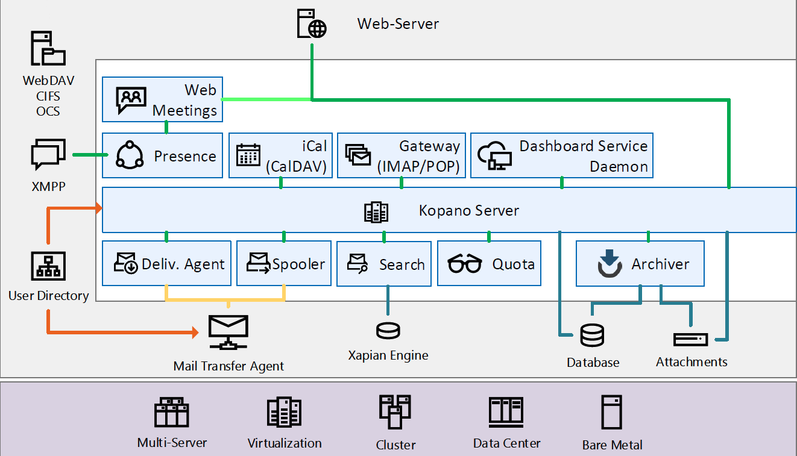

class: center, middle # Introduction to Kopano __Jelle van der Waa__ --- # $ whoami * Developer @ Kopano * Arch Linux Developer * .ion-email[] jelle@vdwaa.nl / j.vanderwaa@kopano.com * .ion-social-github[] @jelly * .ion-social-twitter[] @jvdwaa ??? Introduce yourself shortly. I'm Jelle, Developer at Kopano and an Arch Linux dev where you might now me from. --- # Introduction * Open source communication, collaboration and sharing platform * Email, video, calendaring, tasks, notes and file sharing * Fork of Zarafa * Implements the MAPI Specification * AGPLv3 ??? Introduce Kopano, what the talk is about, talk about general outlines. --- # Architecture (clients) .text_left[ * IMAP / POP3 / CalDav support * ActiveSync for mobile devices / OL (13 and higher) * Our own web and desktop client * plugin support for web / desktop client ]  --- # Architecture (backend) .text_left[ * Use of any MTA possible * MySQL as MAPI storage db * Various user backends: LDAP, AD, DB, Unix * Attachments on disk or S3 based (protocol) * Multi-server architecture ]  --- # Architecture (backend) * All data is stored as MAPI objects * Bindings for C++, PHP, Python for MAPI Clients * Conversion to eml, vcf, ics to and from MAPI * SOAP for transport * Does not implement the DCE/RPC, MAPI/HTTP or "Outlook anywhere" --- # Z-Push * Open Source ActiveSync implementation * Sync mail, calender, contacts and tasks to .ion-social-windows[] .ion-social-android[] .ion-social-apple[] * Written in PHP (uses PHP-mapi extension) * Supports multiple backends (Kopano, Maildir, Vcard, IMAP) * Kopano Outlook Extension (KOE) - Extends the feature-set of OL's ActiveSync Implementation http://z-push.org https://stash.z-hub.io/projects/ZP/repos/z-push/browse https://stash.kopano.io/projects/KOE/repos/kopano_ol_extension_source/browse ??? Run by two developers, lot's of community interaction / patches :) Kopano OL Extension is a foss Outlook plugin which extends the functionality which ActiveSync provides. (Protocol is for mobile clients) ActiveSync only works with OL 13/16. The implementation of OL13/16 ActiveSync is very limited and does not support the GAB for example. --- # MAPI (Objects) ``` Store └── Folder └── Item └── Attachment ``` Proptag | Proptype | Value ---------------- | ------------- | --------- PR_SUBJECT | PT_STRING | 'hello' PR_HASATTACH | PT_BOOLEAN | False PR_CREATION_TIME | PT_SYSTIME | 2017-01-26 10:26:22 PR_MESSAGE_FLAGS | PT_LONG | 8 ```python PR_SUBJECT = PROP_TAG( PT_TSTRING, 0x0037) mapiobj.SetProps([SPropValue(PR_SUBJECT, 'subject')], 0) mapiobj.GetProps([PR_SUBJECT], 0) ``` --- # MAPI (Good parts) * Technology from ~ '80, still developed * Extensible * ICS framework (Incremental change synchronisation) --- # MAPI (Bad parts) * Hard to grasp * Low-level * Documentation * Legacy ??? --- # Python-kopano * 2 years ago started hacking on a high level Python API * Acts as a MAPI client * Abstracts MAPI * Easy to interface * Tools / programs built on top of it Examples: * Search * Backup * Spam learning daemon * Debugging tools * Functional tests https://stash.kopano.io/projects/KSC/repos/lab-scripts/browse/python-kopano https://stash.kopano.io/projects/KSC/repos/kopano-spamd/browse --- ## MAPI Example (email) ```python session = OpenECSession('user1','pass',os.getenv('KOPANO_SOCKET')) ``` -- ```python store = GetDefaultStore(session) outboxid = HrGetOneProp(store, PR_IPM_OUTBOX_ENTRYID).Value outbox = store.OpenEntry(outboxid, None, MAPI_MODIFY) ``` -- ```python message = outbox.CreateMessage(None, 0) ``` -- ```python message.ModifyRecipients(0, [[SPropValue(PR_RECIPIENT_TYPE, MAPI_TO), SPropValue(PR_DISPLAY_NAME, 'Jelle van der Waa'), SPropValue(PR_EMAIL_ADDRESS_A, 'j.vanderwaa@kopano.com') ]]) message.SetProps([SPropValue(PR_SUBJECT, 'hello fosdem'), SPropValue(PR_BODY, 'empty body!')]) ``` -- ```python message.SubmitMessage(0) ``` ??? Example the horrid world of MAPI low-level --- ## Python-kopano Example (e-mail) ```python import kopano server = kopano.Server(auth_user='user1', auth_pass='user1') user = server.user('user1') ``` -- ```python # Send e-mail user.outbox.create_item(subject='hello fosdem', body='empty body!', to='jelle van der Waa <j.vanderwaa@kopano.com>').send() ``` --- ## Python-kopano Example ```python # access MAPI property item = next(user.inbox.items()) item.subject = 'new subject' # Iterate users for user in server.users(): print(user) print(user.enabled) print(user.outofoffice.enabled) # Search! for item in user.inbox.search('hello'): print(item) # Low-level possible item.mapiobj.GetProps([PR_SUBJECT], 0) ``` ??? Show them enlightment --- # Downstream * Debian - process of getting into Debian https://wiki.debian.org/groupware/kopano * OpenSUSE - build service repository https://build.opensuse.org/project/show/server:mail:kopano <img style="padding-left: 40px;" src="debian.png" width="200px" height="200px"> <img style="padding-left: 40px;" src="opensuse.png" width="300px" height="200px"> ??? Thanks to Carsten Schoenert, Guido Günther there is work in progress of moving Kopano into Debian. OpenSUSE tagged for factory inclusion. --- # Conclusion * Main website https://kopano.io * Packages https://download.kopano.io/community/ * Git https://stash.kopano.io * .ion-social-github[] https://github.com/Kopano-mirror/ --- # Questions